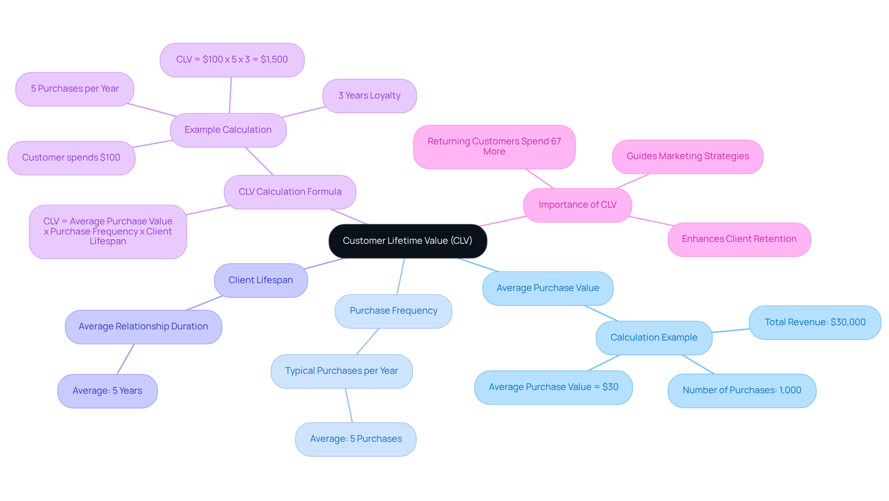
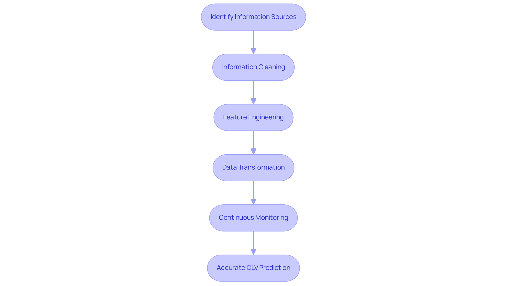
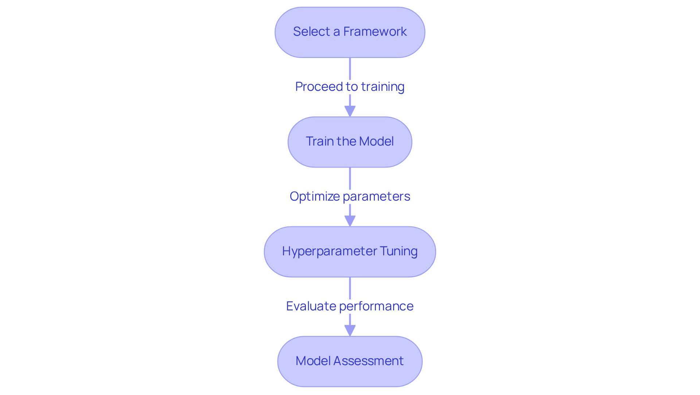
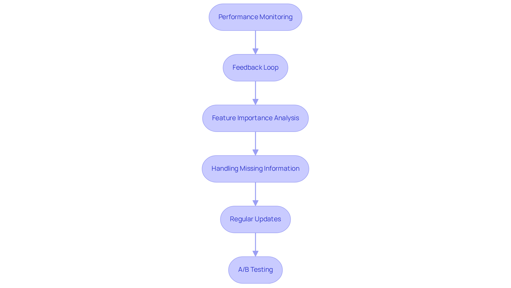

Overview
This article delineates five essential steps for achieving successful Customer Lifetime Value (CLV) prediction. It emphasizes the critical role of data collection, the application of machine learning, and the necessity of continuous model evaluation. Accurate CLV predictions not only enhance resource allocation but also improve client segmentation and retention strategies. These improvements ultimately drive profitability and facilitate informed business decisions. By understanding and implementing these steps, businesses can leverage data-driven insights to optimize their strategies effectively.
Introduction
Understanding the financial health of a business often hinges on a single, powerful metric: Customer Lifetime Value (CLV). This critical figure quantifies the total revenue a company can expect from a customer over their relationship, serving as a guiding light for marketing strategies and resource allocation. As businesses strive to enhance customer engagement and retention, the challenge arises: how can organizations accurately predict CLV to optimize their efforts? This article delves into five essential steps for successful CLV prediction, offering insights that empower businesses to harness the full potential of their customer relationships.
Define Customer Lifetime Value (CLV)
Customer Lifetime Value (CLV) represents a pivotal metric that evaluates the total revenue a business can expect from a customer throughout their entire relationship. To accurately define CLV, it is essential to consider the following components:
- Average Purchase Value: This is determined by dividing total revenue by the number of purchases over a specific period. For instance, if a retail business generates $30,000 from 1,000 transactions, the average purchase value would be $30.
- Purchase Frequency: This metric indicates the average number of purchases an individual makes within a specified timeframe. In retail, a shopper might typically make around five purchases a year.
- Client Lifespan: This estimates how long an individual continues to engage with your business. On average, a client relationship may last about five years.
The formula for CLV can be summarized as follows:
CLV = Average Purchase Value x Purchase Frequency x Customer Lifespan
For example, if a customer spends $100 each time, makes five purchases a year, and remains loyal for three years, their CLV would be calculated as follows: $100 x 5 x 3 = $1,500. Understanding these components is crucial for the customer lifetime value prediction, as they directly influence the total value derived from each client.
In 2025, leveraging customer lifetime value prediction insights will be vital for refining marketing strategies and enhancing client retention, ultimately driving profitability. Notably, returning clients spend 67% more than new clients, underscoring the financial impact of client retention on CLV. Moreover, employing advanced algorithms in recommendation systems can significantly enhance the shopping experience by analyzing consumer behavior and preferences, ultimately leading to improved retention and customer lifetime value prediction.

Understand the Importance of Predicting CLV
Predicting Customer Lifetime Value (CLV) is crucial for several reasons:
- Resource Allocation: Identifying high-value clients enables businesses to allocate marketing budgets more effectively. This ensures that resources are focused on retaining and acquiring the most lucrative clients, ultimately maximizing return on investment.
- Client Segmentation: A thorough comprehension of CLV enhances improved segmentation of clients. This understanding facilitates the creation of customized marketing strategies that resonate with different target audiences, thereby enhancing engagement and conversion rates.
- Enhanced Retention Approaches: By forecasting which clients are likely to leave, companies can proactively implement retention strategies. This not only boosts client loyalty but also significantly lowers turnover rates, contributing to long-term profitability.
Informed decision-making relies on accurate customer lifetime value prediction, which yields valuable insights that inform various business decisions, including product development, pricing strategies, and promotional campaigns. These informed decisions drive profitability and foster sustainable growth.
- Statistics on Resource Allocation: Research indicates that businesses leveraging CLV insights can improve resource allocation efficiency by up to 30%, allowing for more strategic marketing investments.
In essence, forecasting CLV transcends simple numerical analysis; it empowers businesses to make informed choices that enhance relationships with clients and stimulate growth.
Collect and Prepare Data for Analysis
To effectively predict Customer Lifetime Value (CLV), a structured approach to data collection and preparation is essential:
- Identify Information Sources: It is crucial to gather information from various origins, including transaction history, client demographics, and engagement metrics. Key sources often include CRM systems, e-commerce platforms, and customer surveys, providing a comprehensive view of customer interactions.
- Information Cleaning: Prioritize information cleaning to ensure accuracy and reliability. This process involves removing duplicates, correcting inaccuracies, and addressing missing values. Methods like outlier removal and transformation are essential. Employing tools such as Python’s Pandas library can simplify this process, improving efficiency in information preparation. Remember, information quality is vital; cleansing and validation processes are necessary to ensure accuracy and completeness. In the context of data science, managing absent data efficiently is crucial for preserving performance and reliability.
- Feature Engineering: Enhance your system’s predictive power by creating new features. For instance, calculating Recency, Frequency, and Monetary (RFM) metrics for each customer can provide deeper insights into their behavior and value. Additionally, exploring advanced methodologies such as Learning to Rank can further refine your feature set, improving the relevance of your predictions.
- Data Transformation: Normalize or standardize your information as necessary to ensure that all features contribute fairly to the system. This step is especially crucial for machine learning algorithms, which can be sensitive to the scale of input information. Utilizing ensemble techniques can also improve the robustness and accuracy of the system, ensuring that your predictions are trustworthy and efficient.
- Continuous Monitoring: Regularly refresh and oversee your information and frameworks to uphold precision in your CLV forecasts. This continuous process is crucial for adjusting to shifts in client behavior and market conditions. Adopting a structured method for oversight can assist in recognizing changes in trends and performance, facilitating prompt modifications.
By carefully organizing your information and incorporating continuous monitoring, you lay the groundwork for precise and dependable customer lifetime value prediction. This ultimately drives informed business choices and enhances customer retention.

Apply Machine Learning Techniques for CLV Prediction
To effectively apply machine learning techniques for Customer Lifetime Value (CLV) prediction, it is essential to follow these key steps:
- Select a Framework: Begin by choosing appropriate machine learning frameworks that align with your data and business objectives. Commonly utilized models include:
Linear Regression: This model is ideal for predicting continuous values based on linear relationships.
Decision Trees: These are effective in capturing non-linear relationships and interactions among features.
Random Forests: An ensemble method that enhances prediction accuracy by aggregating multiple decision trees, making it robust against overfitting.
Gradient Boosting Machines (GBM): Particularly powerful for managing complex datasets, GBMs improve prediction accuracy through iterative learning. For instance, you can implement the
GradientBoostingClassifierfromsklearn.ensemblein Python, which builds one tree at a time, correcting errors made by previously trained trees. Here’s a simple implementation:from sklearn.ensemble import GradientBoostingClassifier boosting_model = GradientBoostingClassifier(n_estimators=100) boosting_model.fit(X_train, y_train)
- Train the Model: Next, divide your dataset into training and testing sets. Utilize the training set to fit your framework and the testing set to evaluate its predictive performance.
- Hyperparameter Tuning: Optimize your system’s parameters to enhance performance. Techniques such as Grid Search or Random Search can be employed to identify the best parameter combinations.
- Model Assessment: Finally, evaluate the system’s performance using metrics such as Mean Absolute Error (MAE), Root Mean Squared Error (RMSE), and R-squared. These metrics provide insights into the accuracy of your customer lifetime value prediction.
By leveraging these machine learning techniques, businesses can establish robust systems that yield accurate customer lifetime value prediction. This ultimately leads to more informed marketing strategies and improved customer relationships.

Evaluate and Optimize Your CLV Prediction Model
To effectively evaluate and optimize your Customer Lifetime Value (CLV) prediction model, consider the following essential steps:
- Performance Monitoring: Continuously assess the system’s performance over time. Utilize a validation dataset to track the accuracy of customer lifetime value prediction for new customers. This ongoing assessment is vital, as it enables the identification of changes in data distributions that could affect reliability.
- Feedback Loop: Establish a feedback mechanism to collect insights from stakeholders and end-users. This feedback is invaluable for making necessary adjustments to the framework, ensuring it aligns with real-world applications and user expectations.
- Feature Importance Analysis: Conduct an analysis to identify which features significantly affect the predictions of the system. Concentrating on these significant variables can improve the system, augmenting its predictive capability and significance.
- Handling Missing Information: Implement strategies to address absent information within your dataset. This may involve utilizing imputation techniques or other approaches to ensure that the system can make precise predictions despite incomplete information.
- Regular Updates: Given that customer behavior and market conditions are dynamic, it is vital to frequently refresh your framework with new data and retrain it. This practice aids in preserving accuracy and guarantees that the system adjusts to changing trends.
- A/B Testing: Implement A/B testing to compare the performance of different approaches or strategies based on CLV predictions. This method aids in identifying the most effective approaches, allowing for data-driven decision-making.
By adhering to these steps, including the handling of missing data, you can ensure that your customer lifetime value prediction model remains accurate and relevant, ultimately driving improved business outcomes and customer engagement.

Conclusion
Understanding and predicting Customer Lifetime Value (CLV) is essential for businesses aiming to enhance profitability and client retention. By accurately calculating CLV, organizations can gain valuable insights into their customer relationships, enabling them to tailor marketing strategies and allocate resources more efficiently. The steps outlined in this guide provide a comprehensive roadmap for businesses to navigate the complexities of CLV prediction, from defining the metric to applying machine learning techniques for accurate forecasting.
Key arguments discussed include the significance of understanding the components of CLV, such as:
- Average purchase value
- Purchase frequency
- Client lifespan
Furthermore, the guide emphasizes the importance of:
- Data collection
- Preparation
- Application of advanced analytical techniques to derive meaningful insights
Continuous evaluation and optimization of the prediction model are also crucial for adapting to changing market dynamics and customer behaviors.
In a competitive landscape, leveraging customer lifetime value prediction not only fosters informed decision-making but also empowers businesses to cultivate stronger relationships with their clients. Implementing these strategies can lead to improved customer engagement, increased retention, and ultimately, greater financial success. Embracing the methodologies outlined in this article is a vital step toward unlocking the full potential of customer lifetime value and ensuring sustainable growth.
Frequently Asked Questions
What is Customer Lifetime Value (CLV)?
Customer Lifetime Value (CLV) is a metric that evaluates the total revenue a business can expect from a customer throughout their entire relationship with the company.
What components are essential for calculating CLV?
The essential components for calculating CLV are Average Purchase Value, Purchase Frequency, and Client Lifespan.
How is Average Purchase Value calculated?
Average Purchase Value is calculated by dividing total revenue by the number of purchases over a specific period. For example, if a business generates $30,000 from 1,000 transactions, the average purchase value would be $30.
What does Purchase Frequency indicate?
Purchase Frequency indicates the average number of purchases an individual makes within a specified timeframe. For instance, a shopper might typically make around five purchases a year.
How is Client Lifespan defined?
Client Lifespan estimates how long an individual continues to engage with a business, with an average client relationship lasting about five years.
What is the formula for calculating CLV?
The formula for CLV is: CLV = Average Purchase Value x Purchase Frequency x Customer Lifespan.
Can you provide an example of how to calculate CLV?
Yes, if a customer spends $100 each time, makes five purchases a year, and remains loyal for three years, their CLV would be calculated as follows: $100 x 5 x 3 = $1,500.
Why is predicting CLV important for businesses?
Predicting CLV is important for resource allocation, client segmentation, enhanced retention approaches, and informed decision-making, which all contribute to long-term profitability and growth.
How can predicting CLV improve resource allocation?
By identifying high-value clients, businesses can allocate marketing budgets more effectively, focusing resources on retaining and acquiring the most lucrative clients.
What impact does understanding CLV have on client segmentation?
A thorough understanding of CLV enhances client segmentation, allowing businesses to create customized marketing strategies that resonate with different target audiences, improving engagement and conversion rates.
How does forecasting CLV aid in retention strategies?
By forecasting which clients are likely to leave, companies can proactively implement retention strategies, boosting client loyalty and significantly lowering turnover rates.
What is the potential efficiency improvement in resource allocation by leveraging CLV insights?
Research indicates that businesses leveraging CLV insights can improve resource allocation efficiency by up to 30%.